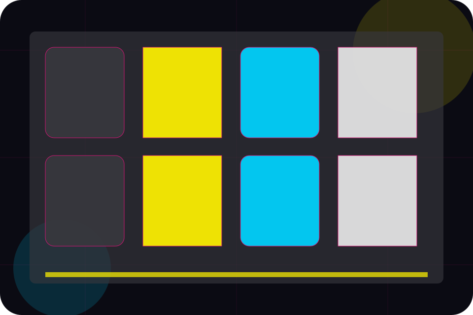
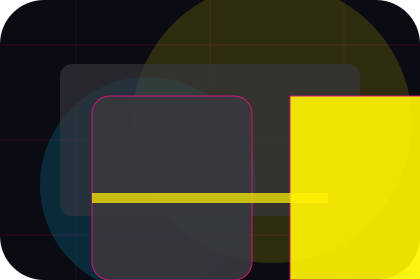
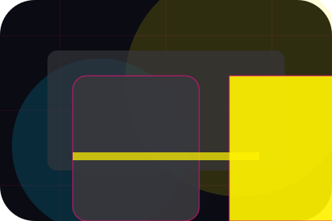
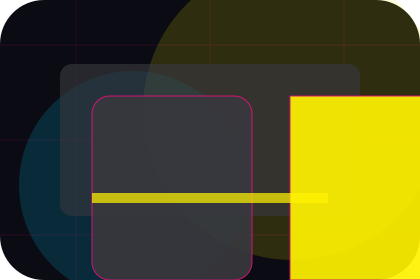
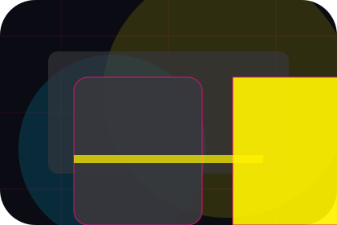
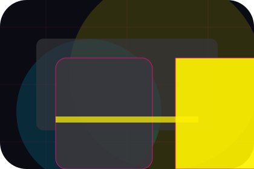
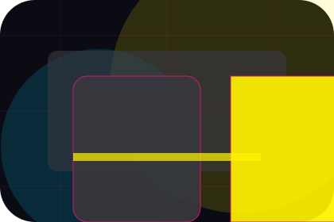
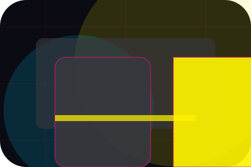
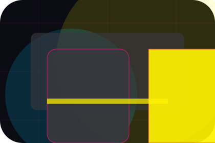
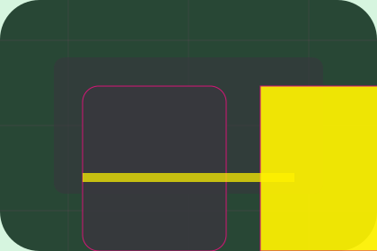

Careers / 01
Careers by Wave
Careers shaped for media, broadcasting & digital content decisions.
Careers opens as a clear media decision hub: what Wave offers, who it helps, why it matters, and which route to take first.
The first screen combines positioning, proof, primary action, and fast internal navigation, so people can act immediately or compare the rest of the careers route with context.
Media scopeCompare optionsRequest advice
Angular media hero
Filter the schedule
Select the closest route and Wave keeps the next step, proof, and follow-up expectation aligned with audience reach and timing.

Careers / 02
Roles inside careers
Roles adds professional context to the careers route, using the neon editorial news grid structure to support audience reach and timing before visitors choose a next step.
Wave uses angled story cards and focused copy to make the decision easier to scan, aligning the section with audience reach and timing rather than filling space.
Explore Careers
Context
Roles gives the page a specific angle instead of repeating the navigation label.

Judgment
The angled story cards show what to compare, what to avoid, and what matters most for media, broadcasting & digital content visitors.

Direction
The final cue points to a useful internal route so the section keeps the journey moving.
Careers / 03
Culture inside careers
Culture adds professional context to the careers route, using the neon editorial news grid structure to support audience reach and timing before visitors choose a next step.
Wave uses angled story cards and focused copy to make the decision easier to scan, aligning the section with audience reach and timing rather than filling space.
Explore CareersContext
Culture gives the page a specific angle instead of repeating the navigation label.
Judgment
The angled story cards show what to compare, what to avoid, and what matters most for media, broadcasting & digital content visitors.

Direction
The final cue points to a useful internal route so the section keeps the journey moving.
Careers / 04
Internships inside careers
Internships adds professional context to the careers route, using the neon editorial news grid structure to support audience reach and timing before visitors choose a next step.
Wave uses angled story cards and focused copy to make the decision easier to scan, aligning the section with audience reach and timing rather than filling space.
Explore CareersWave structures internships around context, judgment, and a clear next route so visitors can compare the block quickly before they advertise with the team.
Advertise With UsCareers / 05
Departments inside careers
Departments adds professional context to the careers route, using the neon editorial news grid structure to support audience reach and timing before visitors choose a next step.
Wave uses angled story cards and focused copy to make the decision easier to scan, aligning the section with audience reach and timing rather than filling space.
Explore CareersContext
Departments gives the page a specific angle instead of repeating the navigation label.

Judgment
The angled story cards show what to compare, what to avoid, and what matters most for media, broadcasting & digital content visitors.

Direction
The final cue points to a useful internal route so the section keeps the journey moving.
Careers / 06
Requirements inside careers
Requirements adds professional context to the careers route, using the neon editorial news grid structure to support audience reach and timing before visitors choose a next step.
Wave uses angled story cards and focused copy to make the decision easier to scan, aligning the section with audience reach and timing rather than filling space.
Explore CareersContext
Requirements gives the page a specific angle instead of repeating the navigation label.
Careers / 07
Benefits: the better state
Benefits defines the better state Wave is built to create, with enough detail to make the promise believable.
A media site with bold editorial grid, neon category strips, episode cards, and advertiser download routes. The section grounds that direction in concrete benefits, visible tradeoffs, and a next route visitors can use when the promise feels relevant.
Explore CareersBetter State
Benefits defines what becomes clearer, easier, or safer when Wave is the chosen route.

Practical Gain
The benefit is tied to audience reach and timing, not a vague quality claim.

Proof Route
Visitors get a linked path to compare the promise against services, standards, or examples.
Careers / 08
How the steps path works
Steps explains the operating sequence so visitors can see how the first request becomes a clear recommendation and follow-up.
The steps are written from the visitor side: what they do first, what Wave clarifies, what they receive, and how support continues.
Explore Careers- 01
Start
How visitors begin this route and what detail is useful at the first step.
- 02
Clarify
What Wave reviews, filters, or explains before recommending the next move.
- 03
Continue
What the visitor receives afterward, including support, proof, or a handoff to the next page.
Careers / 09
Advertise With Us
Wave closes the careers route with a clear action, a quick reminder of the value, and a low-friction way to advertise with the team.
Visitors who are ready can use the primary action. Visitors who are still comparing can scan the section links, proof, and support routes before they advertise with the team.
Advertise With UsReady
Use the primary CTA when the fit is clear and timing matters.
Compare
Review linked proof, questions, and support routes if more context is needed.
Response
Wave keeps the next reply focused on scope, timing, and the right first step.
Careers / 10
Advertise With Us
Wave closes the careers route with a clear action, a quick reminder of the value, and a low-friction way to advertise with the team.
Visitors who are ready can use the primary action. Visitors who are still comparing can scan the section links, proof, and support routes before they advertise with the team.
Advertise With UsThe final block keeps the choice simple: act now, compare one more proof route, or send enough detail for a focused response.
Advertise With Usaudience reach and timing
Advertise With Us
A media site with bold editorial grid, neon category strips, episode cards, and advertiser download routes. Careers ends with a direct path to advertise with the team, plus enough context for visitors who still need to compare.

Advertise With UsImportant notes before you act
Information is provided for planning and should be reviewed for the final client, location, and operating rules.